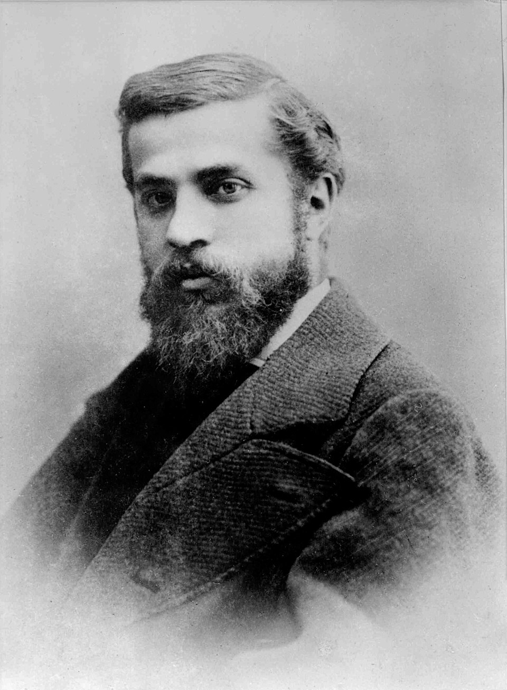
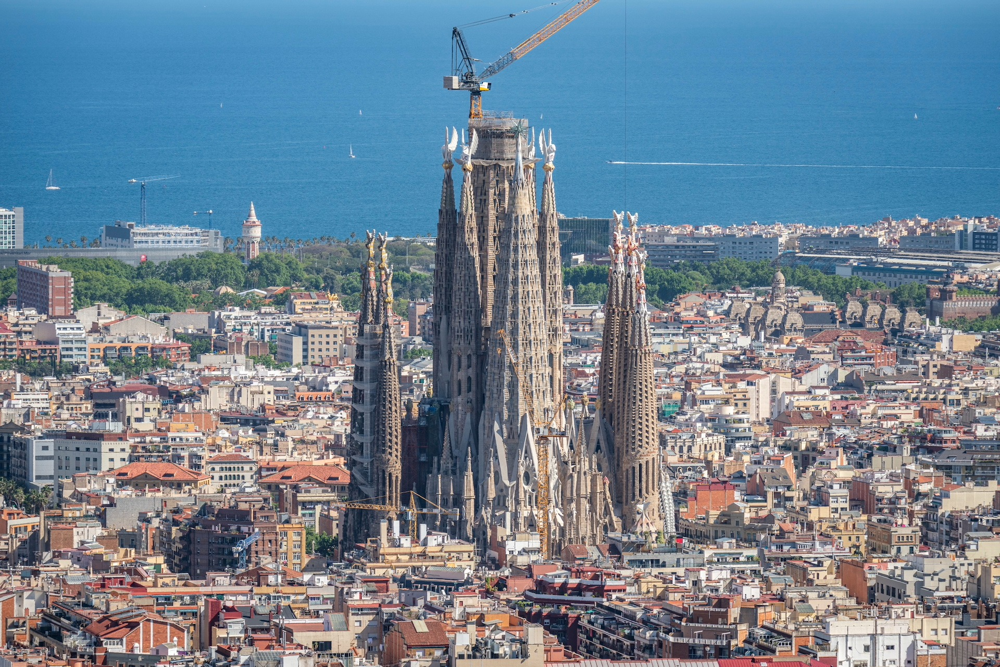

Bazilica și Templul Expiatoriu Sagrada Família, cunoscută și sub numele de Sagrada Família, este o biserică aflată în construcție în cartierul Eixample din Barcelona, Catalonia, Spania. Este cea mai mare biserică catolică neterminată din lume. Proiectată de arhitectul catalan Antoni Gaudí (1852–1926), în 2005 lucrarea sa la Sagrada Família a fost adăugată la un sit al Patrimoniului Mondial UNESCO deja existent (1984), intitulat Lucrările lui Antoni Gaudí. Pe 7 noiembrie 2010, Papa Benedict al XVI-lea a consacrat biserica și a proclamat-o bazilică minoră.

Construcția Sagrada Família a început pe 19 martie 1882, sub conducerea arhitectului Francisco de Paula del Villar. În 1883, când Villar a demisionat, Gaudí a preluat conducerea proiectului, transformându-l cu stilul său arhitectural și inginerește, combinând forme gotice cu elemente curbilinii din stilul Art Nouveau. Gaudí și-a dedicat restul vieții acestui proiect și este îngropat în cripta bisericii. La momentul morții sale, în 1926, mai puțin de un sfert din proiect era finalizat.

Bazându-se exclusiv pe donații private, construcția Sagrada Família a progresat lent și a fost întreruptă de Războiul Civil Spaniol. În 1939, Francesc de Paula Quintana a preluat conducerea șantierului, care a putut continua cu materialul salvat din atelierul lui Gaudí și reconstruit din planurile publicate și fotografii. Construcția a reluat progresul intermitent în anii 1950.
Progresele în tehnologii precum proiectarea asistată de calculator și controlul numeric computerizat au permis o avansare mai rapidă, iar construcția a trecut de jumătatea drumului în 2010. În 2014, se anticipa că clădirea va fi finalizată până în 2026, la centenarul morții lui Gaudí, dar acest calendar a fost amenințat de încetinirile cauzate de pandemia de COVID-19 din 2020-2021. În martie 2024, o prognoză actualizată a reconfirmat o posibilă finalizare a clădirii în 2026, deși s-a anunțat că lucrările la sculpturi, detalii decorative și o scară propusă, controversată, care va duce la ceea ce va deveni intrarea principală, sunt așteptate să continue până în 2034.